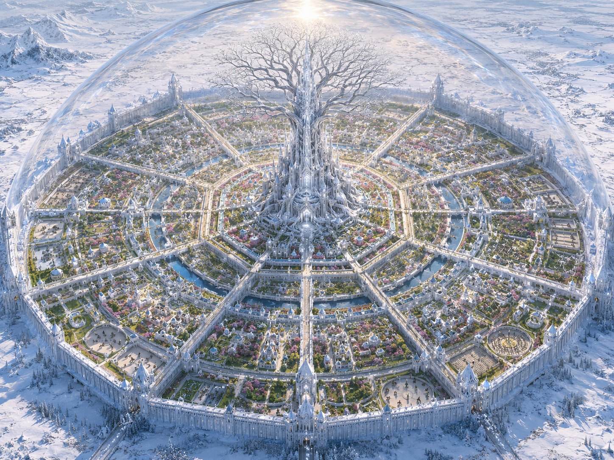
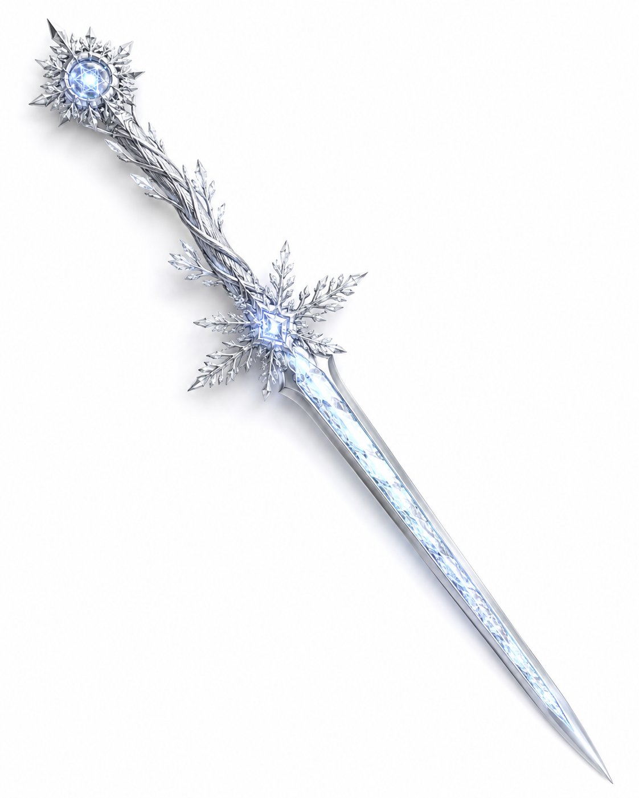
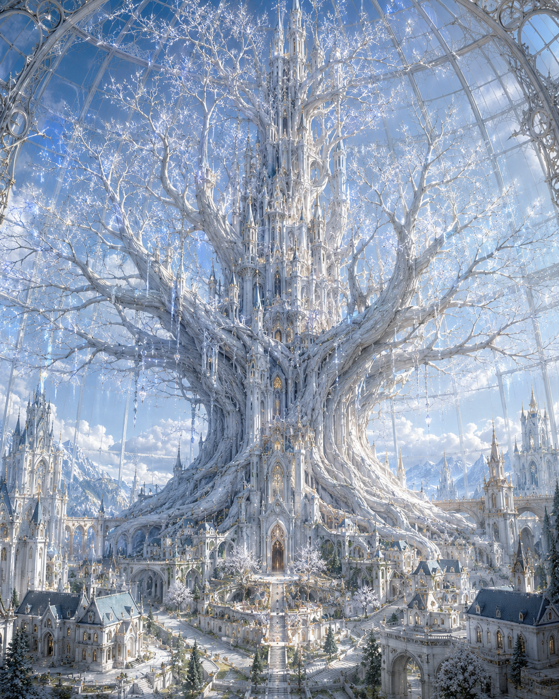

常春の街



- 概要
-
結晶の国に存在する唯一の都市。結晶の国は、実質的にこの都市そのものを指す。
正式な都市名ではなく、俗称。
人口は約三百万人。
魔法壁とガラスドームで覆われた閉鎖都市。
ガラスドームは人工太陽としても機能し、外の太陽と連動して都市内部の昼夜を管理している。
街内は常に春の気温に保たれており、天気の変化は存在しない。
上空から見た都市の形状は、六角形を基調とした雪の結晶を想わせる。 - 都市構造
-
中央に聳える〝雪化粧の樹〟を核として、外側へ段階的に拡張されてきた巨大都市。
都市内部は六方向に分割され、さらに中心から外側に向けて同心六角形状の区画に分かれている。
この構造は、人口増加に合わせて魔法壁を外側へと拡張した歴史の名残である。
現在、都市の拡張は禁止されている。
- 晶環区画
-
・中央神域
・第一晶環
・第二晶環
・第三晶環
・第四晶環
・第五晶環
・外郭環
中央から外側に向けて伸びる同心六角形状の区画。 - 方位区画
-
・氷位
・水位
・青位
・白位
・空位
・雪位
〝雪化粧の樹〟を中心に六方向に分割された区画。
晶環と合わせて、以下のように呼称される。
例:
第一晶環・氷位
第三晶環・空位
第五晶環・白位
- 中央神域
-
常春の街の最中心部に位置する特別区画。
〝雪化粧の樹〟とそれに融合した城、【称号の六家】の本邸、結晶の国の最重要国家インフラが集約されている。
そのため、一般住民の立ち入りは制限されている。
〝雪化粧の樹〟を中心に、六家に対応する形で綺麗に六分割されている。